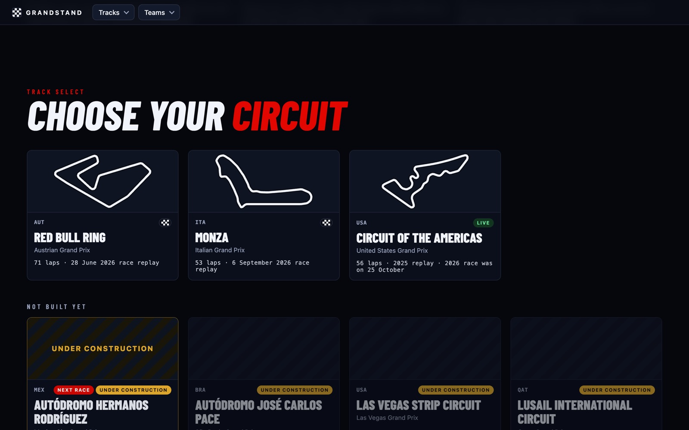
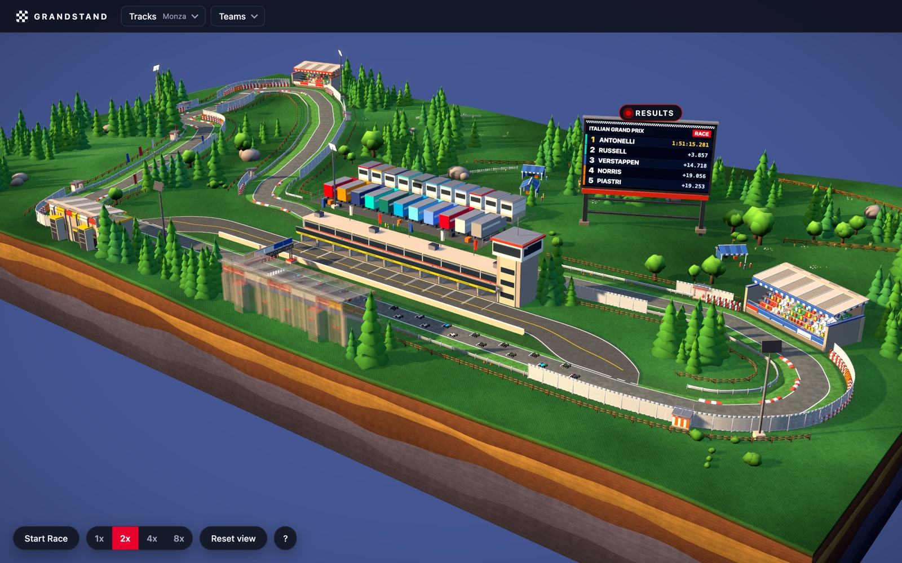
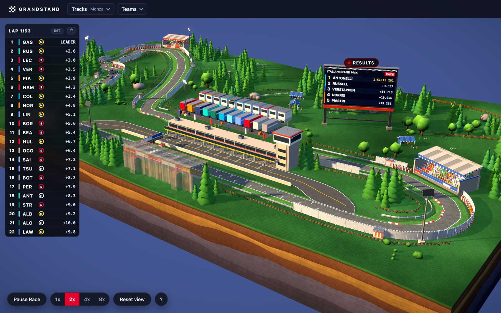
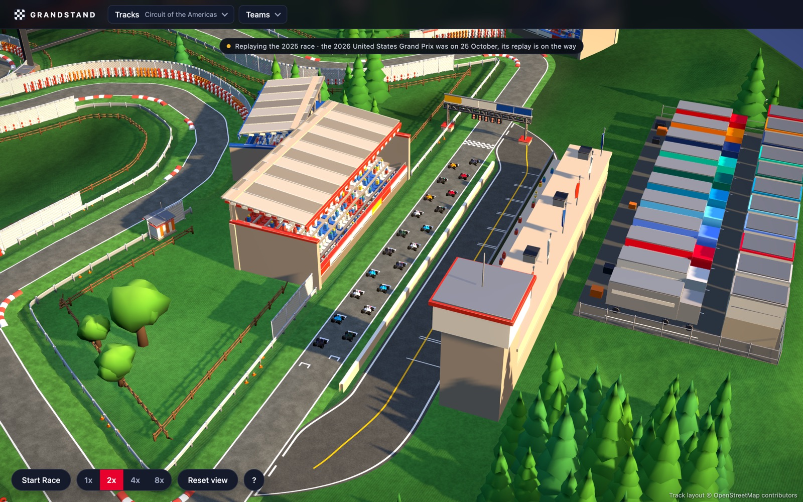
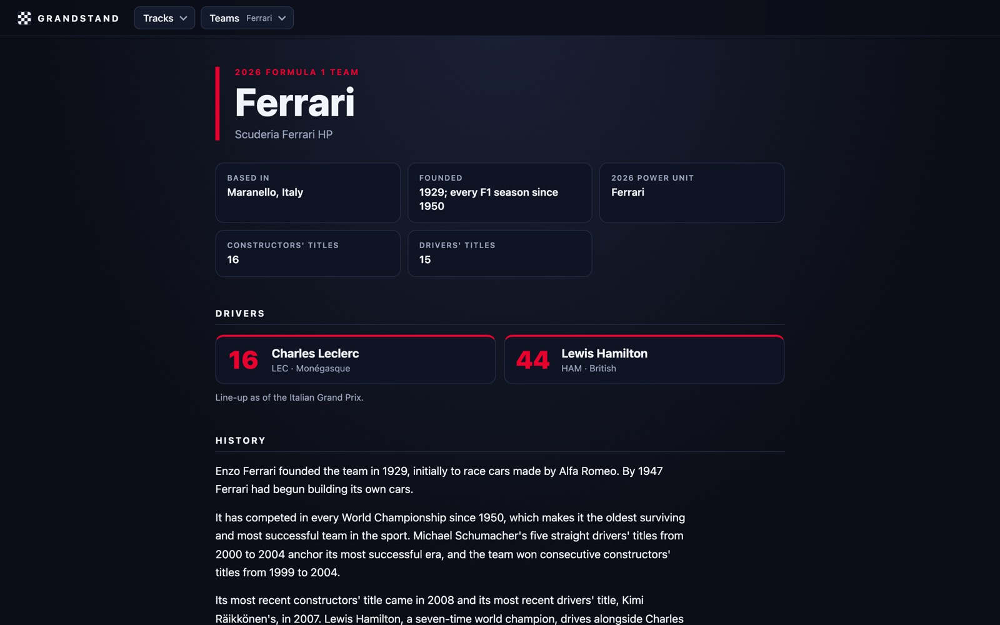

Real Formula 1 races replayed on a tiny 3D world you can walk around. Every lap, pit stop and position change from the actual race plays out on a hand-built diorama of the circuit, in the browser, with no download. Built by a fan, for fans: designed, modelled and coded end to end.
Every circuit on the 2026 calendar has a card with its real track outline. Built circuits replay their race; the rest wear an “under construction” stripe, and the next race to be built is flagged so fans know what is coming.

Fig. 02 — Track select
02 — Enter the stands
A whole circuit on a tabletop
Each circuit is a diorama cut from the real map: the track, pit building, garages, grandstands, trees and a jumbotron showing the actual race result. Drag to orbit, scroll to zoom, and click a car to follow its driver.

Fig. 03 — Monza
03 — Start the race
The real race, replayed
Press Start Race and all 22 cars run the actual Grand Prix from lights out, using lap-by-lap race data: overtakes, pit stops with tyre changes, retirements and the safety car. A live timing tower tracks gaps and tyres, at 1× to 8× speed.

Fig. 04 — Race replay
04 — Up close
Down at track level
Zoom in and the detail holds up: the full grid on the start straight, team-coloured garages, crews in the pit lane and kerbs at every corner. Circuit of the Americas replays the 2025 race while the 2026 replay is prepared.

Fig. 05 — Circuit of the Americas
05 — Teams
Every team, every driver
Team pages give each constructor its base, history, titles and current line-up, linked from the cars on track and the menu.

Fig. 06 — Team page
How it is built
3D
Circuits from real map data
Each layout starts from OpenStreetMap. A Python tool turns the map data into a circuit module (track curve, pit lane, garages), so adding a new track is repeatable instead of hand-placed.
Modelling
Blender, scripted
Terrain, barriers, buildings, vegetation, cars and pit crews are built by Python scripts in Blender, so every circuit shares one look and can be regenerated.
Performance
Fast enough for a phone
Models are Draco-compressed, cars switch to lighter versions at a distance, and assets are cached hard, so a full circuit with 22 cars loads quickly in a browser tab.
Data
Real race timing
Each built circuit carries a race file with the real results and timing. Speeds, pit stops and retirements are derived from it, and covered by tests.
Layer
Tool
Used for
Interface
React 18
The landing page, track select, team pages, timing tower and controls.
3D
Three.js + React Three Fiber
The diorama, cameras, lighting and post-processing.
Modelling
Blender + Python
Scripted models for terrain, buildings, cars and crews.